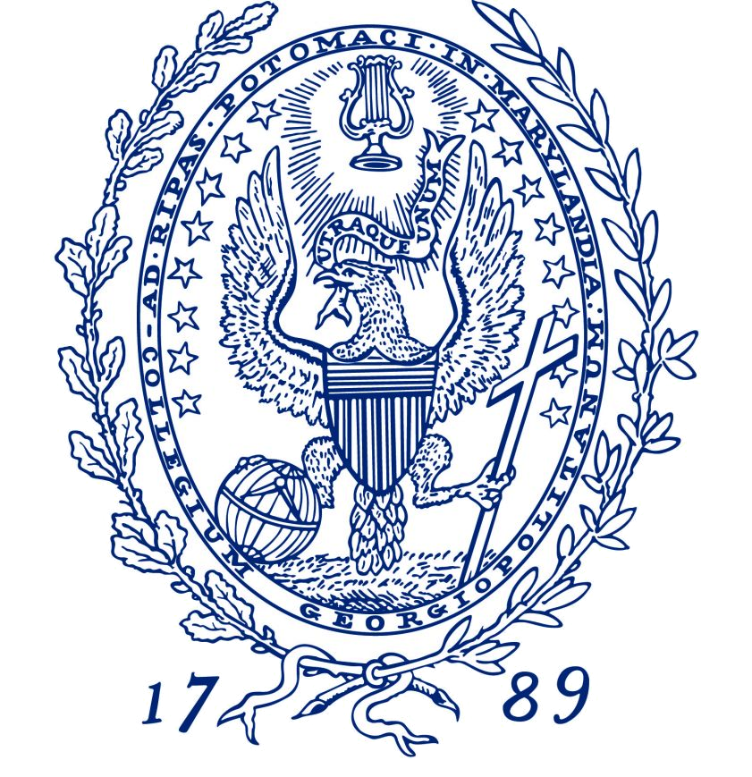

Boston College
BA Mathmatics
Minor: Computer Science
2010-2014
Tufts University
MS Computer Science
2014-2016
Georgetown University
PhD Computer Science
2016-present
I am a PhD student in the department of computer science at Georgetown University, where I am advised by Professor Jeremy T. Fineman. My research is focused on algorithms for graph problems. Before Georgetown, I got my masters in Computer Science at Tufts University and I received my bachelors in math from Boston College.
|
|
 |
|
Boston College |
Tufts University |
Georgetown University |
|
Boston College |
|
Tufts University |
|
Georgetown University |
Tandem Use of Optical Sensing and Machine Learning for the Determination of Absolute Configuration, Enantiomeric and Diastereomeric Ratios, and Concentration of Chiral Samples. Zeus De los Santos, Sean MacAvaney, Katina Russell, Christian Wolf. Angewandte Chemie International Edition 2019.
Hate speech detection: Challenges and solutions. Sean MacAvaney, Hao-Ren Yao, Eugene Yang, Katina Russell, Nazli Goharian, Ophir Frieder. PLOS ONE 2019.
I/O-Efficient Algorithms for Topological Sort and Related Problems. Nairen Cao, Jeremy T. Fineman, Katina Russell and Eugene Yang. SODA 2019.